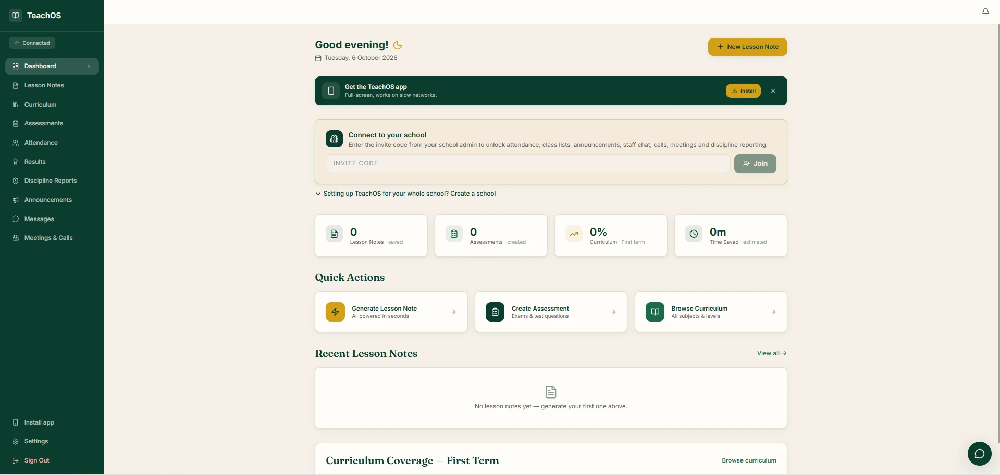
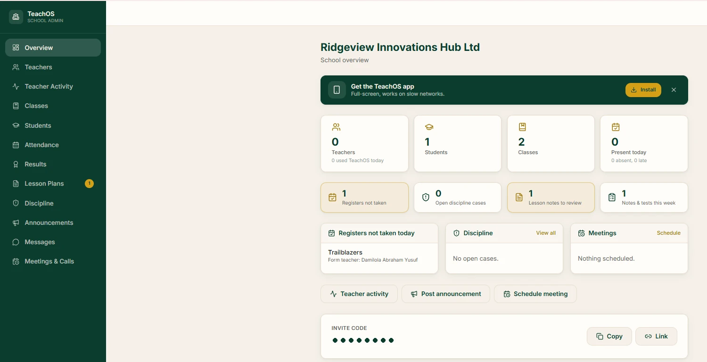

Curriculum-native
Built directly on the NERDC scheme of work. The platform already knows the prescribed topic. Nothing is typed from scratch and nothing is invented.
Live in production at teachosnigeria.com
TeachOS is the operating system for Nigerian schools and teachers. It writes complete, NERDC-aligned lesson notes, schemes of work and assessments in seconds, and gives school leaders one honest view of the school day.
Damilola AbrahamFounder & Creative Director, TeachOS & Ridgeview
A Nigerian-built platform that replaces the notebooks, Word documents and WhatsApp groups teachers juggle today. Teachers sign in on a phone or computer and have every tool from day one.
Built directly on the NERDC scheme of work. The platform already knows the prescribed topic. Nothing is typed from scratch and nothing is invented.
Every note exports as a print-ready PDF in the standard format supervisors and inspectors already grade against.
Works offline, storing work locally and syncing when a connection returns. Runs on the Android phone a teacher already owns.
A head teacher dashboard shows curriculum coverage, note submission and teacher activity, replacing the paper register.
Subject, class, term and week. TeachOS already knows the topic from the national curriculum.
Objectives, introduction, step-by-step development, teaching aids, assessment and homework.
Read it through, edit anything, then save or export as a print-ready PDF. Under 10 seconds to a first draft.
Everything a teacher needs to plan, teach, record and report, in one place.
Pick subject, class, term and week. A complete NERDC-aligned lesson note is ready in under 10 seconds, fully editable.
A full 13-week scheme of work for any subject and class level, aligned to the national curriculum.
Objective tests, theory questions and marking guides in seconds, ready to print.
Every subject and level in one place, with a live view of how much of the term each teacher has covered.
Class registers taken on the phone: present, absent and late, visible to the school office the same day.
Continuous assessment scores and grading recorded once, in one place, instead of across notebooks.
Teachers log incidents as they happen, so cases reach leadership with a proper record behind them.
School notices reach every teacher on the platform. No more lost circulars or buried WhatsApp messages.
A staff chat that belongs to the school, separate from personal phone groups.
Staff meetings scheduled and held inside the same platform teachers already use every day.
No internet at school? Work is stored on the device and syncs when the connection returns.
Every document exports in the standard lesson note format that supervisors and inspectors expect.
Installs like an app. Teachers add TeachOS to the home screen of an Android phone or iPhone. It opens full-screen and is built to work on slow networks.
The School Admin dashboard shows the principal who is in, what has been prepared, and what still needs attention.

Teachers, students, classes and who is present today, on a single screen.
See which teachers used TeachOS today and what they prepared this week.
Submitted lesson notes arrive in a review queue for the head teacher to check.
Any class without a register today is flagged, with the form teacher named.
Class lists and student records kept centrally and shared with each form teacher.
School-wide attendance and results, without waiting for end-of-term paperwork.
Open discipline cases tracked from first report through to resolution.
Note submission and curriculum coverage across the whole staff, in real time.
Post a notice or schedule a staff meeting in two taps from the overview.
Teachers stop spending their preparation time transcribing and start spending it preparing. Notes become complete and consistent instead of rushed.
Every note across every class in the same professional format, generated from the same curriculum source.
The admin dashboard shows note submission and curriculum coverage across the whole staff, in real time.
Records are complete and exportable at any moment. Ministry visits become routine rather than disruptive.
Workload is the most cited reason good teachers leave private schools. This is a concrete, visible reduction.
AI-assisted, curriculum-verified lesson preparation is a real differentiator for a school, not a slogan.
Monthly, with no lock-in and no exit fee. Payment by bank transfer or card.
So a teacher can test the platform before anything is agreed.
Everything TeachOS does, for the whole teaching staff.
For individual teachers, or schools below fifteen staff.
Schools with more than fifteen teaching staff are quoted per additional teacher. Multi-campus groups are quoted as a group.
Twenty minutes. We generate a live lesson note for one of your actual subjects and classes.
We onboard your teachers in person and let them use it for real preparation. No card, no commitment.
At the end of the trial you subscribe or you don't. We'll tell you honestly if your staff didn't take to it.
Subscribed schools get direct support and are consulted on what we build next.
Founder & Creative Director, TeachOS & Ridgeview Innovations Hub
A tech entrepreneur and digital innovator, Damilola spent years in Nigerian education before moving into technology. TeachOS started from watching teachers, especially primary school teachers writing notes for up to eighteen subjects, lose their evenings to lesson preparation. It was designed from a structured survey of teachers, head teachers and education administrators across public and private schools, then built, deployed and put in front of real classrooms.
Uptake is high because it removes work rather than adding it. Onboarding still matters, which is why we train school staff in person rather than sending a link.
Notes are generated against the NERDC scheme of work rather than freely invented, and every note is fully editable. Teachers review and approve before use.
Yes. It is built for Android smartphones, installs to the home screen like an app (iPhone too) and works offline, syncing when a connection returns.
Notes export in the standard format inspectors expect and are editable throughout. Tell us your school's requirements and we will work with them.
Yes. Subscriptions are monthly. There is no lock-in and no exit fee.
We'll run a twenty-minute demonstration for your school, on your own subjects and classes.
The full 8-page TeachOS School Partnership Proposal, personalised with the school's name and saved as a PDF.